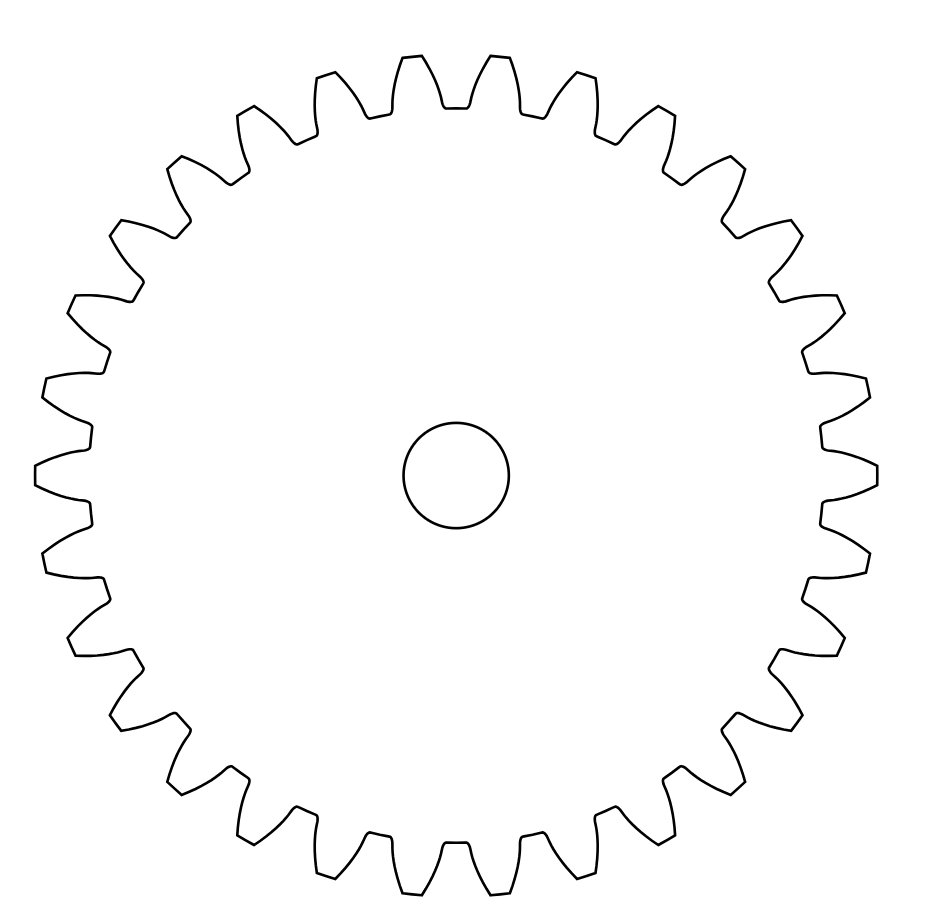

<br>
#### Week 8: CNC Milling, Molding & Casting
<p1>
I just wanted to test out molding and casting so I created a simple gear in fusion 360 to use
<p1>

<p1>
I then cut it out and made a plastic mold for it that I then filled with the plaster that I dyed red
and let that sit for 30 minutes before taking it out. In the process of taking it out, it started sepearating and
didn't end up coming out fully together
<p1>